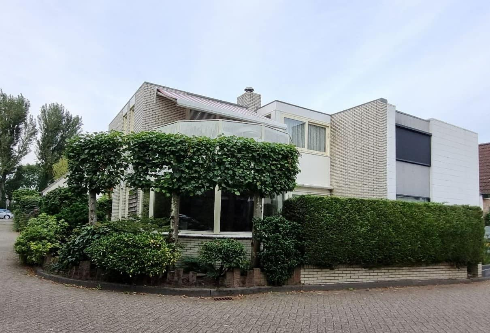

And the beautiful suburban houses!
These suburban houses aren't just walls and roofs; they're sanctuaries where countless cherished family memories are made. With spacious yards for children to play and quiet cobble stoned streets for peaceful walks, our suburban houses offer the idyllic family life you've been yearning for.
Imagine cozy evenings by the fireplace, family barbecues in the backyard, and a safe, tight-knit neighbourhood where your children can grow and flourish. These homes are not just structures; they're the foundation of a nurturing, family-centered lifestyle.
Discover a safe, clean, and fun neighbourhood where families thrive. This neighbourhood offers peace of mind, pristine streets, and endless opportunities for laughter and enjoyment.
